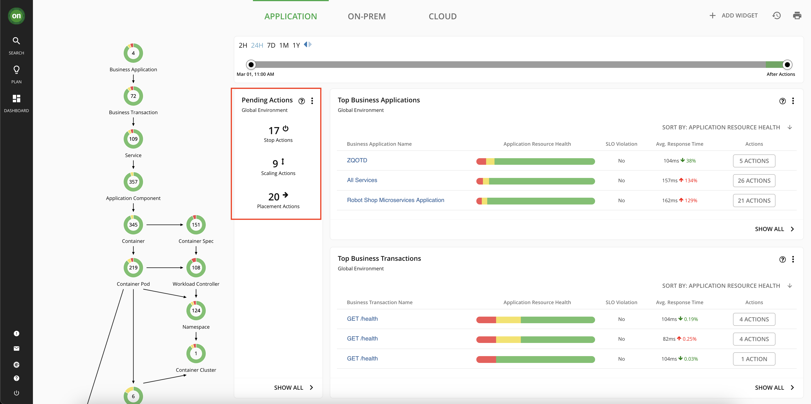

AIOps with IBM Z and LinuxONE¶
Turbonomic¶
Overview of Turbonomic Application Resource Management¶
Turbonomic is IBM's Application Resource Management (ARM) solution for both cloud and on-premises environments.
Application Resource Management platforms continuously analyze applications' resource needs and generate fully automatable actions to ensure applications always get the resources (CPU, memory, etc.) they need to perform.
Turbonomic enables environments to achieve the following conflicting goals at the same time:
-
Assured application performance: Prevent bottlenecks, upsize containers/VMs, prioritize workload, and reduce storage latency.
-
Efficient use of resources: Consolidate workloads to reduce infrastructure usage to the minimum, downsize containers, prevent sprawl, and use the most economical cloud offerings.
You configure managed environments as Turbonomic targets. Turbonomic discovers the entities (physical devices, virtual components and software components) that each target manages, and then performs analysis, anticipates risks to performance or efficiency, and recommends actions you can take to avoid problems before they occur.
Navigating the Turbonomic Dashboard¶
Homepage¶
-
Navigate to the Turbonomic platform home page. You can find the console link and your credentials on the Environment Access Page file.
Because you are logged in as a user with "Advisor" credentials, you can see everything that Turbonomic is managing, but you cannot take actions against the target environments or modify the Turbonomic server itself. You could set up more users either locally on the Turbonomic server or with an authentication such as LDAP. These new users can have their access scoped to certain environments, applications, or specific entities on the Turbonomic server so people can only access what they need to.

The first thing to notice is the supply chain on the left side of the page. Turbonomic uses the concept of a supply chain made up of buyers and sellers all with the goal of meeting application resource demand. The supply chain shown on the homepage includes all the entities that Turbonomic identified based on deployment of the KubeTurbo operator on the OpenShift on IBM Z cluster. The relationships and interdependencies between each entity were automatically identified and provide an overview of how each object relates to one another. Because an OpenShift cluster is being monitored, you can see application and cluster infrastructure components were found including containers, namespaces, persistent volumes, and the single virtual machines running the OpenShift nodes. This is an interactable chart so you can click on any of the entity types to drill down directly from the homepage.

On the right side of the page, you can see there is a "Business Application" listed with the name
Robot Shop Microservices Application. A Business Application is a Turbonomic concept defined by a group of related objects of your choosing. In the case of this demonstration, Business Applications are imported from the Instana Application Perspectives, as well as all the related entities that Turbonomic correlated with them, such as the virtual machine the pods are running on, the namespace (project) they're running in, the persistent volumes where they store data, and the Kubernetes cluster itself. This is one example of the integration between Instana and Turbonomic.Instana working alongside Turbonomic brings other benefits as well, such as letting Turbonomic see the application response times and transaction speeds and then use that data to horizontally scale pod counts to meet defined Service-Level Objectives (SLOs). Without Instana or another Application Performance Monitoring (APM) solution in place, you would not have any visibility into application response times or metrics, and this Turbonomic functionality would be inaccessible.

Near the middle of the page, you will see a section titled "Pending Actions". These are all the actions that Turbonomic is recommending you take to make sure applications get the resources they need without over-provisioning. You will learn more about actions later in this tutorial.
Search¶
-
In the left side menu, select the Search option.
On the search page, you can filter down to specific types of entities that Turbonomic has identified. For example, if you look at Namespaces, it will return all the namespaces, or projects in OpenShift nomenclature, in the target cluster.
-
Select the Namespaces option in the list.

Next you will dig into the namespace that contains the Robot Shop sample application.
-
Select the
robot-shopnamespace.
You now have a view that is scoped to only the components running in the robot-shop namespace, as well as any related components that those pods interact with, such as virtual machines, storage volumes, etc. You are provided all the actions against these components, the top services and workload controllers by CPU and memory for the robot-shop components, information about any quotas assigned to the project, and more. If you want to scope down an individual's access to a single application, only workloads in a specific datacenter, or a custom group of workloads and components you define, this is an example of what that could look like.
Turbonomic Actions¶
What are Actions?¶
After you deploy your targets, Turbonomic starts to perform analysis as part of its Application Resource Management process. This holistic analysis identifies problems in your environment and the actions you can take to resolve and avoid these problems. Turbonomic then generates a set of actions for that particular analysis and displays it in the Pending Actions charts.
What Actions are Available for OpenShift on IBM Z Targets?¶
For OpenShift on IBM Z, Turbonomic can generate the following actions:
Vertically Scale Containers - resize container spec sizes (click to expand)
If a containerized application needs more CPU or memory to ensure it's running with desired performance, Turbonomic can scale up the container spec. In OpenShift terms, this means adjusting the resource requests and/or resource limits applied to the application pods. The reverse is also important - if a container is overprovisioned - it has too much CPU or memory assigned to it - these resources are going to waste. Overprovisioning is a common issue in the containerized world, and it leads to inefficient use of resources, lack of resources for other applications that need it, and wasted money.Horizontally Scale Containers - Scale up the number of pods for a microservice (click to expand)
If there is a Service Level Objective (SLO) configured for a containerized application, Turbonomic can scale the number of pods up or down in order to meet the demand at any given moment. An APM solution such as Instana is required for this action type. Turbonomic needs metric data from the APM about response time and transactions speeds in order to enforce SLOs.Pod Moves - move a pod from one node to another (click to expand)
Turbonomic continuously moves pods based on node resources available. The moves are performed in a way that keeps the application available throughout the move. Once executed, Turbonomic will start a new pod on the destination node -> ensure that it is running and ready -> deletes the original pod. This way, there is no perceived downtime to the application end user.Cluster Scaling - Provisioning or Suspending OpenShift Nodes (click to expand)
Turbonomic will also generate actions to create new nodes in the OpenShift cluster or suspend existing nodes based on its analysis of efficiency (consolidating workloads onto fewer nodes) and performance (avoiding node congestion). For OpenShift on IBM Z, Turbonomic will only *recommend* actions related to cluster scaling. Turbonomic relies on OpenShift machine autoscaling which is not supported on IBM Z. Therefore, if a node provision/suspension action is generated for an IBM Z cluster, administrators will need to perform that action themselves with manual methods and then Turbonomic will see that change.Manually Executing Actions¶
As you saw throughout the tour of the Turbonomic platform, there pending actions related to some sample applications running on the IBM Z cluster.
-
In the OpenShift console, navigate to your
userNN-project, click the icon for the NodeJS application, click the Actions dropdown, and then select Edit Resource Limits.
These are the default NodeJS application resources. Requests are the amount of CPU and memory a container is guaranteed to get. Limits are the maximum amount of resources a container can use before they are restricted.

The defaults for the NodeJS application are intentionally suboptimal in order to generate recommended actions in Turbonomic.
-
In the Turbonomic console, log OUT of your
userNNusername using the button in the bottom-left corner of the menu. -
Log back in to Turbonomic with the new username:
userNN-actionsand the same password as before.This username has permissions to execute actions against a sample application in the
userNN-projectnamespace.Because this username is scoped to only the
userNN-projectnamespace, that is all you can see. -
From the home page, click the userNN-project Business Application.
-
Click the Pending Actions just to the right of the supply chain chart.

The action(s) here are related to the microservices in the userNN-project. You should have actions related to CPU and/or memory resizing for the NodeJS frontend application and/or the Postgres backend database.
-
Click the details button to far right of the
nodejs-postgres-exampleaction to drop down more details.Here you see more details about exactly what Turbonomic is recommending you do via the action. It includes resizing both CPU and memory limits for the pod, and you can see the result that Turbonomic expects in terms of CPU throttling and resource utilization as a percentage of CPU and memory limits.

Because this is a manual action (rather than Recommended) you are provided with a button in the user interface to directly execute the action and make the proposed changes. Because you are logged in with credentials scoped to this namespace, you can execute the action. If you were logged in with your
userNNadvisor credential, you would not be able to execute the action. -
Click the green Execute Action button.
Turbonomic will apply the recommended changes to the NodeJS application running on OpenShift. You can see the executed action in the
userNN-projectbusiness application "All actions" panel.
-
In the OpenShift console, refresh the page and navigate back to the
nodejs-postgres-exampleresource limits to see the new values.Although this type of manual action with human review and execution is extremely helpful for reducing the amount of time and thought put into container resizing, the goal of AIOps solutions is to automate as many of these processes as possible. Turbonomic supports automatic execution of actions.
For example, the Robot Shop application containers are resized on a daily basis. The schedule for automated actions can be determined by operations teams. As Turbonomic learns more about the application, its performance, and the impact of the actions it executes, it will adjust accordingly to ensure that each pod has enough CPU and memory to perform well, but not so much that the resources are going to waste.
Turbonomic Wrap-up¶
In this section, you have seen some of the capabilities of Turbonomic Application Resource Management of an OpenShift on IBM Z cluster. Turbonomic has many more capabilities that were not covered in this demonstration, which you can read more about in the Turbonomic Documentation as well as in this IBM article.